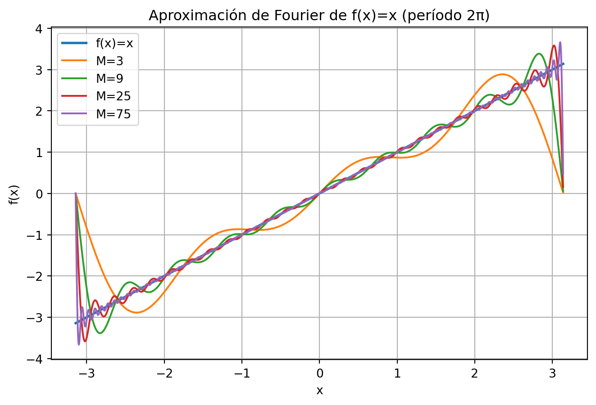

Series de Fourier y otras transformadas
Series de Fourier — Idea general
Sea \(f\) una función periódica de período \(2L\) que cumple condiciones de Dirichlet. Entonces puede representarse como:
\[ f(x) \sim \frac{a_0}{2} + \sum_{n=1}^{\infty} \Big[ a_n \cos\!\big(\tfrac{n\pi x}{L}\big) + b_n \sin\!\big(\tfrac{n\pi x}{L}\big) \Big]. \]
En puntos de continuidad, la serie converge a \(f(x)\); en discontinuidades converge al promedio lateral \(\tfrac{f(x^-)+f(x^+)}{2}\).
Coeficientes (período \(2L\))
\[ a_0 = \frac{1}{L}\int_{-L}^{L} f(x)\,dx,\qquad a_n = \frac{1}{L}\int_{-L}^{L} f(x)\cos\!\big(\tfrac{n\pi x}{L}\big)\,dx,\qquad b_n = \frac{1}{L}\int_{-L}^{L} f(x)\sin\!\big(\tfrac{n\pi x}{L}\big)\,dx. \]
Caso \(L=\pi\) (período \(2\pi\))): \[ a_0 = \frac{1}{\pi}\int_{-\pi}^{\pi} f(x)\,dx,\qquad a_n = \frac{1}{\pi}\int_{-\pi}^{\pi} f(x)\cos(nx)\,dx,\qquad b_n = \frac{1}{\pi}\int_{-\pi}^{\pi} f(x)\sin(nx)\,dx. \]
Forma compleja
\[ f(x) \sim \sum_{n=-\infty}^{\infty} c_n e^{i n\pi x/L}, \quad c_n = \frac{1}{2L}\int_{-L}^{L} f(x) e^{-i n\pi x/L}\,dx. \]
Relación con \(a_n,b_n\) para \(L=\pi\): \[ c_0 = \frac{a_0}{2}, \quad c_{\pm n} = \tfrac{1}{2}(a_n \mp i b_n). \]
Simetrías útiles
- Si \(f\) es par \(f(-x)=f(x)\): \(b_n=0\) → serie solo de cosenos.
- Si \(f\) es impar \(f(-x)=-f(x)\): \(a_0=0,a_n=0\) → serie solo de senos.
Series de medio rango
Senos (extensión impar): \[ f(x) \sim \sum_{n=1}^{\infty} B_n \sin\!\big(\tfrac{n\pi x}{L}\big), \quad B_n = \frac{2}{L}\int_{0}^{L} f(x)\sin\!\big(\tfrac{n\pi x}{L}\big)\,dx. \]
Cosenos (extensión par):
\[ f(x) \sim \frac{A_0}{2} + \sum_{n=1}^{\infty} A_n \cos\!\big(\tfrac{n\pi x}{L}\big), \quad A_n = \frac{2}{L}\int_{0}^{L} f(x)\cos\!\big(\tfrac{n\pi x}{L}\big)\,dx. \]
Convergencia y energía
Criterio de Dirichlet: si \(f\) es acotada y suave a trozos, su serie de Fourier converge a \(f(x)\) en puntos de continuidad y al promedio en saltos. Parseval: \[ \frac{1}{L}\int_{-L}^{L} |f(x)|^2\,dx = \frac{a_0^2}{2} + \sum_{n=1}^{\infty} (a_n^2 + b_n^2). \]
Ejemplos típicos
1. \(f(x)=x\) (impar, período \(2\pi\)): \[ x = 2 \sum_{n=1}^{\infty} \frac{(-1)^{n+1}}{n}\sin(nx). \]
2. Onda cuadrada: \(f(x)=\operatorname{sgn}(\sin x)\) → \[ f(x) = \frac{4}{\pi} \sum_{k=0}^{\infty} \frac{1}{2k+1}\sin((2k+1)x). \]
3. Diente de sierra: \(f(x)=x/\pi\) → \[ f(x) = \frac{2}{\pi} \sum_{n=1}^{\infty} \frac{(-1)^{n+1}}{n}\sin(nx). \]
Demostración numérica: serie parcial de f(x)=x
Transformada Discreta de Fourier (DFT)
\[ X[k] = \sum_{n=0}^{N-1} x[n] e^{-i 2\pi kn/N},\quad k=0,\dots,N-1. \]
Ejemplo: onda cuadrada y su espectro

Otras transformadas
Transformada de Fourier continua:
\[ \mathcal{F}\{f\}(\omega) = \int_{-\infty}^{\infty} f(t)e^{-i\omega t}\,dt. \]Transformada de Laplace:
\[ \mathcal{L}\{f\}(s) = \int_{0}^{\infty} f(t)e^{-st}\,dt. \]Transformada Z:
\[ X(z) = \sum_{n=0}^{\infty} x[n]z^{-n}. \] Cada una generaliza la idea de la serie de Fourier a dominios distintos (continuo, discreto o complejo). ## Conclusión
Las series de Fourier y sus transformadas asociadas son herramientas esenciales para el análisis de señales, resolución de ecuaciones diferenciales y modelado de fenómenos periódicos o transitorios.